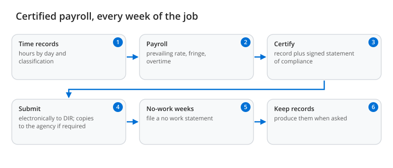

Certified payroll
In one sentence: certified payroll is your weekly payroll for the job, worker by worker and day by day, signed under penalty of perjury and filed electronically with DIR.

What a certified payroll record shows
For each worker on the job, each week:
- name, address and last four digits of the Social Security number (follow the current form's rules);
- work classification, including apprentice status and step;
- hours worked each day and the total, straight time and overtime;
- rate paid, gross wages for the job and all jobs;
- fringe benefits paid as cash or to plans;
- deductions and net pay;
- a signed statement of compliance.
Filing with DIR
California requires contractors and subcontractors to submit certified payroll electronically to the Labor Commissioner through DIR's system, against the project the agency registered with the PWC-100. Submit at least monthly, or more often if the contract asks; many agencies also want copies weekly. Use a "no work performed" statement for weeks with no work on the job.
Keeping records
Keep the payroll records and the time records behind them for the period the law requires, and produce them when the agency, the Labor Commissioner or a joint labor-management committee asks. From January 1, 2027, a contractor that does not timely produce requested payroll records may be barred from using them later in its own defense (SB 1316).
Federal-aid jobs
Federal-aid jobs also use the federal weekly payroll form or an equivalent, submitted to the agency weekly under the FHWA-1273 provisions. See Federal-aid jobs: Davis-Bacon and FHWA-1273.
Who signs
The contractor's owner or an authorized officer signs the statement of compliance. A false statement exposes the signer personally.
PM notes
Make the sub's certified payroll a condition of its pay application: no payroll, no payment. Check it against your Daily reports and documentation headcount, which is what auditors do.
Common mistakes / what agencies actually check
- Classifications on payroll that don't match the work in the daily reports.
- Missing weeks because no one filed a "no work" statement.
- Not collecting sub payrolls until the end of the job.